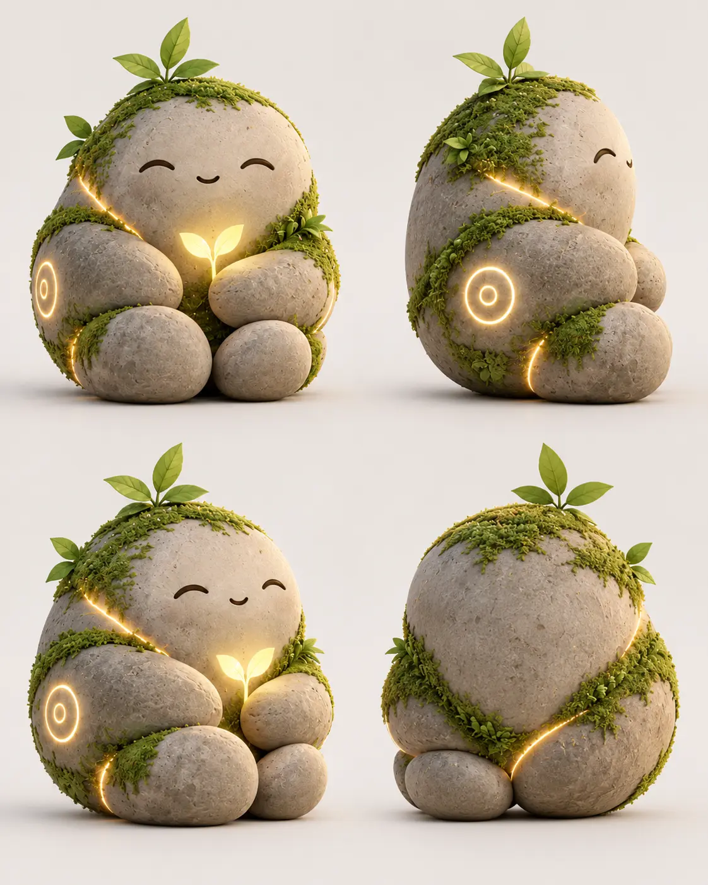

AI-компаньон · Бета в Telegram
Твой день.
Твои истории.
Твой Друк.
Есть чем поделиться? Друк выслушает, запомнит важное и спросит, как всё прошло.
ПодружитьсяОставь заявку на доступ к бета-версии

Знакомый собеседник, каждый день
Не нужно начинать сначала
Можно просто выговориться
Делись радостями и непростыми днями.
Помнит то, что важно
Твои планы и истории остаются в контексте.
Сам спросит, как ты
Вернётся к разговору о важном событии.
Например, так
Завтра важная встреча.
Немного волнуюсь.
На следующий день
Друк
Как прошла встреча?
Ты вчера переживала 🌿
Маленькие детали. Знакомое чувство.
У каждой дружбы есть начало
Начнём с «привет»?
Познакомься с Друком в Telegram.
ПодружитьсяОставь заявку на доступ к бета-версии